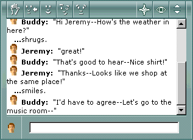

In Desktop World, you can talk to other people by typing messages into the chat text box.

When you finish typing a message into the chat text box, you can "say" it to others by pressing ENTER. Everyone "hears" what you said as the message displays in their chat history view. Your name and a small picture of you appear next to your statement. Any additional comments you make before another member enters a statement will appear with an ellipsis (...) preceeding your comment, instead of your name and picture.
Your chat history area records all of the conversations and gestures in Desktop World from the moment you log on (arrive) until the moment you leave. You can review past statements and gestures by clicking the scroll bar.
You can be anywhere in Desktop World and still be heard by everyone present.
Tip To have a private conversation with another member of Desktop World, use the Whisper option.
The text you typed appears in everyone's chat history area.